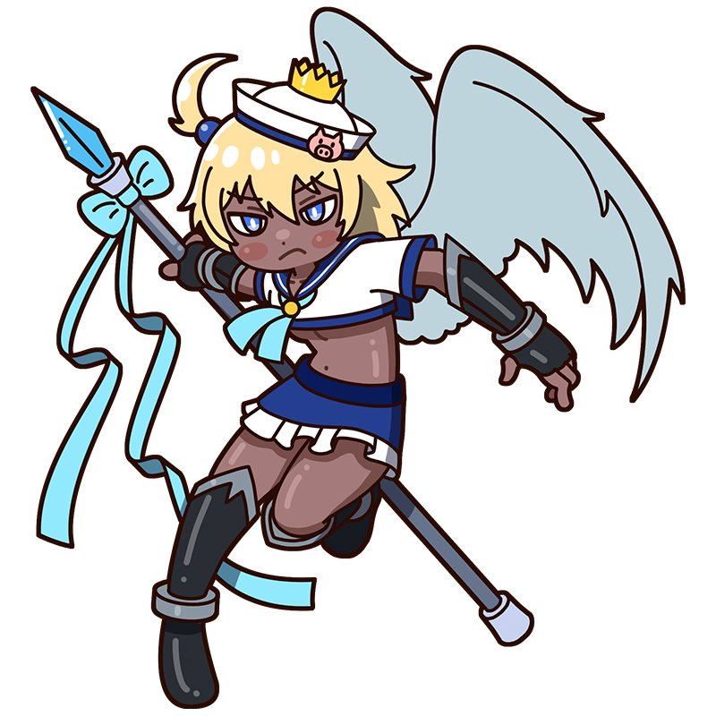

None shall defile the great sky!
I shall strike them down
with my spear!
Boudin
The king of the skies descends,
cleaving through the crystal-clear air
A winged warrior known as the “King of the Skies.” She shows no mercy to those who mar the beauty of the sky, battling evil forces day after day. Yet beneath her fierce exterior lies a gentle, sensitive soul who cannot ignore those in need.
Style
ImpressionismHometown
France
Classics
- "Beach of Trouville"
- "Sailing Boats on the Sea"
- "The Port of Bordeaux" etc.
This is the Boudin piece!
Beach of Trouville
This painting depicts the sandy beach and crowds of people at Trouville in northern France. In many of Boudin’s landscapes, the sky fills most of the canvas, revealing his fascination with clouds, light, and the changing atmosphere. His many scenes of the sea and shore also reflect his father’s work as a sailor and his own experience working at sea in his youth.
Year
1876
Medium
Oil on canvas
Dimension
122.5 cm x 150.5 cm
Collection
National Museum of Western Art
（Japan)
Who is Boudin?
Eugène Boudin
A 19th-century French painter and an early practitioner of painting outdoors to capture light and atmosphere. He began working before the Impressionists, yet greatly influenced artists such as Monet and even took part in the first Impressionist exhibition. For this reason, he is sometimes considered an Impressionist himself. He was especially skilled at painting skies, earning the title “King of the Skies” from Corot of the Barbizon School. Since he favored working outdoors, many of his paintings are relatively small.
Full Name
Eugène Louis Boudin
Born
July 12, 1824
Died
August 8, 1898(aged 74)